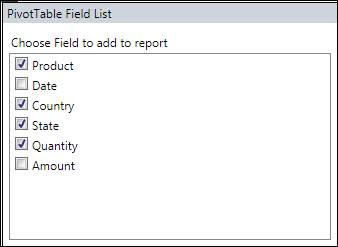
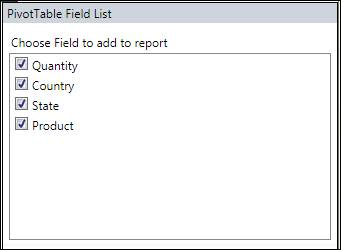

The user can customize the PivotTable field list in PivotSchemaDesigner. The user can hide the unnecessary fields from the PivotSchemaDesigner by using the ShowDisplayFieldsOnly property.
Use Case Scenarios
This feature enables the user to load required set of items in PivotSchemaDesigner.
The following screen shot shows a PivotSchemaDesigner control with all items and required items in a pivot table field list:

Figure 52 Pivot Table Field List with ShowDisplayFieldsOnly Disabled

Figure 53 Pivot Table Field List with ShowDisplayFieldsOnly Enabled
Properties
Table 12: Properties Table
|
Property |
Description |
Type |
Data Type |
Reference links |
|
ShowDisplayFieldsOnly |
Gets or sets the value incdicating to show only the fields that are used in PivotGrid |
Dependency
|
Boolean |
- |
Sample Link
A sample is placed in the following location:
SystemDrive\Users\<user_name>\AppData\Local\Syncfusion\EssentialStudio\<Version_number>\BI\WPF\PivotAnalysis.Wpf\Product Showcase\PivotGridDemo